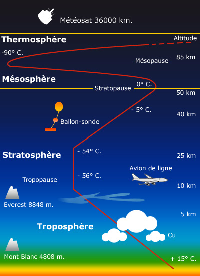
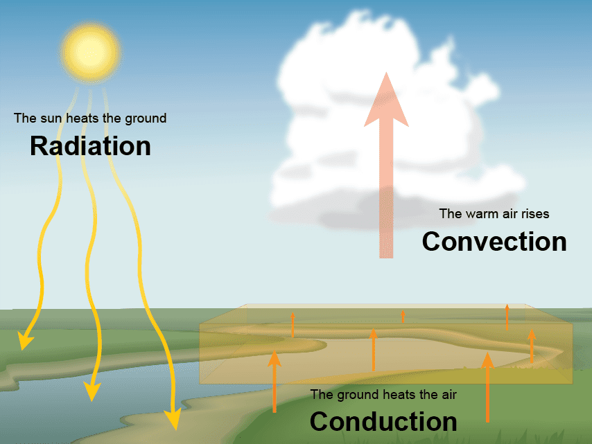

La Température : Notions essentielles en météorologie aéronautique
La température est l’une des variables atmosphériques les plus fondamentales pour le pilote. Elle influence la densité de l’air, les performances de l’aéronef, la formation des phénomènes météorologiques, et joue un rôle central dans les décisions opérationnelles.
Définition physique
La température est une mesure du degré d’agitation des molécules d’un corps ou d’un fluide. Plus les molécules vibrent rapidement, plus la température est élevée. Dans l’atmosphère, elle est étroitement liée à l’énergie thermique provenant du rayonnement solaire.
Unités utilisées
En météorologie aéronautique, deux unités sont principalement utilisées :
Le degré Celsius (°C) : utilisé dans la plupart des pays (et dans l’aviation civile internationale).
Le degré Fahrenheit (°F) : utilisé principalement aux États-Unis.
Pour des calculs scientifiques ou techniques, la température absolue peut être exprimée en Kelvin (K), mais cette unité est rarement utilisée dans les opérations de vol.
Variation verticale de la température

En atmosphère standard, la température diminue en moyenne de 2°C tous les 1000 pieds d’altitude, soit une lapse rate standard de 6.5°C par kilomètre. Cependant, cette décroissance peut varier considérablement selon les conditions météorologiques, notammnt en présence d'inversion de température.
Température et performance de l’aéronef
Une température élevée diminue la densité de l’air, ce qui affecte :
La portance générée par les ailes.
La puissance développée par le moteur (notamment non turbocompressé).
La poussée des hélices et la montée.
Ainsi, des températures élevées allongent la distance de décollage, réduisent le taux de montée et peuvent compromettre les performances globales de l’appareil, surtout à pleine charge ou à haute altitude densimétrique.
Température et phénomènes météorologiques
La température joue un rôle déterminant dans la formation de nombreux phénomènes :
Formation des nuages : lorsqu’une masse d’air se refroidit en s’élevant, elle atteint son point de rosée et la vapeur d’eau se condense en gouttelettes visibles.
Convection : un réchauffement intense du sol peut provoquer des ascendances thermiques, des turbulences convectives et des orages.
Inversions de température : lorsqu’une couche chaude surmonte une couche plus froide, la stabilité de l’atmosphère augmente, piégeant parfois des brouillards ou de la pollution.

Température au sol et en altitude
La température mesurée au sol est importante pour la planification (calcul de masse et centrage, performance au décollage). En vol, la température ambiante (OAT – Outside Air Temperature) est souvent mesurée par sonde et prise en compte dans l’ajustement de la vitesse vraie (TAS) ou du réglage carburateur.
Température et givrage
La zone de température comprise entre 0°C et -20°C est propice au givrage des cellules et des moteurs, surtout en présence d’humidité. Les gouttelettes d’eau surfondue peuvent geler au contact de l’avion, altérant la portance et augmentant la traînée.
Conclusion opérationnelle
Une bonne compréhension de la température permet au pilote :
De mieux anticiper les performances de l’aéronef.
D’interpréter correctement les données météo (TAF, METAR, SIGMET, etc.).
De prendre des décisions éclairées concernant les risques de givrage, d’orages ou de brouillard.
La température est donc une donnée essentielle à surveiller avant et pendant le vol.